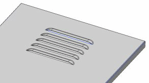
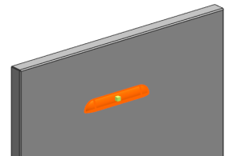
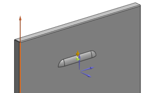
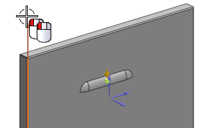

You will create a linear pattern feature of five louvers 25 mm apart.

Choose Insert→Associative Copy→Pattern Feature.
Select the louver.

You can ignore any alerts that appear.
In the Pattern Definition group, from the Layout list, select Linear. Press the middle mouse button to advance to the Vector step.
Select the edge shown.

Double-click the direction arrow so that the direction of the pattern is down.

In the Pattern Definition group, set the following parameters for Direction 1:
Spacing = Count and Pitch
Count = 5
Pitch Distance = 25
Click OK.